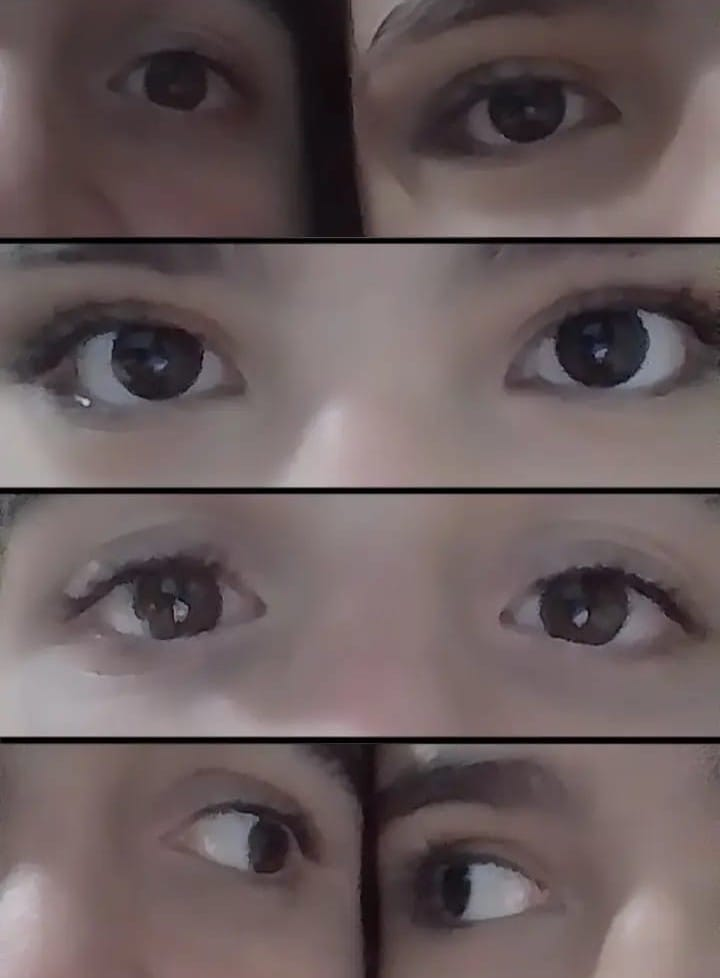

Antes de começar sim amor eu te fiz um site com todas as nossas fotos, bom, a grande maioria delas pq todas são demais e eu espero que você goste e lembre de alguns momentos desse ano e do anterior, começando com essa foto que a Livia tirou da gente no interclasse onde voce só queria me usar mas mesmo sabendo disso mais pra frente eu te pedi em namoro.

uma foto que eu acho muito legal do nosso primeiro passeio no parque, foi aqui onde eu conheci sua mãe, o kaynan e a duda. eu lembro de ter pensado que eu ficaria meio de fora das conversas pq você ia ficar com seus amigos mas vc me deu mt mais atenção e ficamos o tempo todo juntos e isso foi incrivel pra mim pq as minhas outras experiências de namoro tinham sido péssimas e vc veio e me trouxe luz, diversão e tudo a mais de bom.
A primeira vez em que eu fui na sua casa foi uma experiencia diferente, o kaynan e a duda precisavam estar com a gente, depois que eles sairam do salão a gente se pegou horrores, e depois a gente ainda tirou umas fotos essa foto inclusive eu uso de foto de papel de parede até hoje no wpp.

Esse dia foi muito bom, fomos ao shopping eu te comprei a Alice o Daniel ainda gostava da Duda, fomos no Boulevard tomar sorvete, eu te levei pra casa, e eu ainda tinha cabelo kkk

Eu lembro de te contar que eu tinha medo de ir pro exercito, medo do rumo que minha vida ia tomar, e hoje eu to aqui, eu não me arrependo de nada que eu decidi, eu não mudaria nada, e foi isso que provelvemente moldou quem eu sou hoje e eu tenho orgulho disso, do namoro que estamos construindo da pessoa em que estamos se tornando e que passamos por isso juntos.

Aqui a gente tem uma evolução muito grande pq nos saimos sozinhos pela primeira vez kkkkk, e nos ainda vamos sair muito mais daqui pra frente, vimos um macaco nesse dia e pra uma pessoa que tem um bícpes enorme ter meddo de um macaco pequeninho é sacanagem mas eu te ajudei a passar por la pelos macacos.

CJ provavelmente uma das coisas que se você não tivesse feito íria se arrenpender muito, e nesse dia eu fui no encontro de jovens talvez eu nunca me torne do núcleo, que é oq eu acho q vai acontecer, mas foi divertido passar esse ano indo pro grupo de jovens e falando sobre Deus, nós ainda temos muito oq aprender mas oq já passamos foi incrivel, todos os eventos, todas as reuniões, ser proximo de Deus deixou nosso relacionamento mais forte.

Demos uma inovada e fizemos algo diferente na sua casa oq foi muito divertido fazer trends do tiktok com você e vestir sua roupa e aqui surgiu a figurinha que provavelmente você mais ama que sou eu lgbt.
mas aqui eu tinha medo de ficar sem ideias pra onde te levar, ficar na torina e ser sempre as mesmas coisas pq a gente se via com frequência e n era sempre que podiamos sair, nós tinhamos que ficar pelo condominio.

Só que nós fomos pra uma caichoeirra com seus avós e isso foi muito dhr e abriu mais opções pra gente, sobre pesquisar lugares pra sair inventar dates, fazer coisas diferentes, meu objetivo era fazer algo especial e te deixar se sentir bem, esse ano definitivamente foi muito incrivel passar e inventar dates com vc esse ano.
Nós por mais que nunca pudemos sair a noite, ficamos a noite no seu condominio e pros dois isso foi a primeira vez q ficamos com alguem a noite, e isso é uma conquista para os dois, e nós vamos ter mais conquista até o fim do ano, eu te amo

O tempo foi passando mas eu ainda pensava se eu conseguiria ter mais passeios legais com vc, eu me preocupava, e me preocupava com muitas coisas que talvez sejam coisas bestas, queria conseguir fazer mais por nós e ficava pensativo pq tenho o trabalho, o tg, estudar e são mts coisas q ocupam espaço, especialmente agora que vou morar sozinho.

E eu só queria parar nesse tempo em que estavamos na cachoeirra mas eu n posso, temos q seguir em frente juntos com determinação e coragem e isso é bom pra gente, amadurecer, crescer e temos muito oq fazer nos proximos anos.
Por mais que não fosse diferente pra vc pra mim foi um ano de coisas novas eu nunca participei de nenhum evento catolico como o conect crist, vocações, missa da familia, santa rita, missa do fogo, essa foi a minha primeira vez e foi uma experiência muito boa pra minha vida, eu me importo com Deus e estar proximo de Deus, mas logo abaixo dele segue vc, o minha sebosa favorita.

E só de passar o tempo com vc já tornava meu dia melhor, durante esse tempo fizemos tantas coisas inacreditáveis e vamos continuar assim por muito tempo, temos quase um ano juntos mas que venham mais anos assim, menos pecados mortais, mais amor e mais conquistas juntos e individuais afinal eu torço muito pelo seu progresso acadêmico, religioso, familiar e em geral.

Nos mínimos detalhes nosso plano sempre foi juntos, minha tulipa de ti sou a tua violeta e desse céu estrelado faz nem metade da sua beleza, por ti movo montanhas, corro, e me desdobro em pro da sua felicidade, seu sorriso é meu tesouro, e eu priorizo seu bem estar, futuramente teremos um bem maior que será nossos filhos mas antes disso quero aproveitar nosso tempo juntos namorando e depois casados.
Ao TG fica meu agradecimento não sei se estaríamos juntos sem ele, afinal eu iria pra longe, mas de lá pra cá percebi que eu iria me arrepender de não ter participado do TG 02-081 de Suzano, eu estaria sem você, sem disciplina, sem Deus, tudo seria diferente.

Pra mim vc sempre será a mais bela de corpo e alma, e isso basta, tudo depois disso não se torna importante quando se tem uma vida boa, diferente de uma vida que as pessoas ostentas, igual ao meu pai, nós não precisamos dessa vida, porque me basta ser feliz ter uma casa simples, uma família, um gato e fazer muitas viagens. Rezando, indo para a igreja esse é o importante, ir para a Grécia, vaticano, lugares no Brasil e vários outros lugares.

Eu estou na sua Vida há 1 ano e sua família me considera parte dela, eu gosto disso acho legal, com o tempo passando algum dia poderemos formar a nossa família porquê do teu ventre vai nascer nosso filhos e vamos amar ele independente do que acontecer, das escolhas dele, do jeito, se ele tiver algum problema, ou se for menina tb kkkkk.
fui ao circo por causa de você, e você vai a muitos lugares por causa de mim ainda sei que minha mudança pra Taboão está quase confirmada mas vamos ver algum dia de você ir pra lá e nós fazermos algo lá, seus pais podem ir conhecer, e eu me imagino até um dia você podendo dormir lá mesmo acho isso quase impossível
"E, se Cristo não ressuscitou, é vã a nossa pregação, e vã, a vossa fé" 1 Coríntios 14, da mesmo forma se isso não for amor de nada importa, mas da mesma forma que as coisas de cristo não são aleatórias minhas ações por você e suas ações por mim, isso se define como amor pra mim.
Primeira vez fazendo o tapete, e olhá ali o ex da Anna eita. pelo menos esse dia foi da hora fazer algo diferente, e eu tava bem cansado depois de ter saído do campo mas mesmo assim eu fui fazer o tapete.

Eu gosto da Sara porquê as vezes eu me vejo nela, era difícil ser adolescente, eu era difícil e complicado, não tive um caminho, eu seguia oq eu quiser mas isso me moldou e hoje eu to aqui pra seguir o resto do meu caminho junto com vc e com um proposito, e eu vou cumprir o proposito que cristo colocar em meu caminho.

Todos são pecadores, eu tento ser santo, mas o namoro santo é viver negando a tentação, uma tentação que eu tenho todos os dias é de não arrancar sua roupa no dente. Você é gata, linda, que faz meu mundo girar e meu coração acelerar, um beijo seu é o suficiente pra me deixar feliz mas algo dentro de mim grita por mais então eu quero te beijar cada vez mais, minha atração por você aumenta por segundo, você se tornou a minha joia preciosa que eu vou defender a qualquer custo

uma joia intocável, que eu te dou a minha fidelidade e meu dever a busca da santidade, você não vai ser envolver com qualquer um, porquê eu estou buscando o caminho do justo, santidade, manter a castidade, defenderei a sua pureza, darei a minha vida por ti, que eu derrame todo o sangue necessário pra cumprir o que for necessário pro nosso matrimonio, sendo o próximo passo a catequese.

Aniversario da Anna, divertido gosto de passar o tempo com você, me sinto bem, o tempo passa bem mais rápido com você kkkk

Salesópolis e a nossa foto que na sua cabeça ia ser A FOTO, por mais que é apenas uma foto comum, isso marca muito mais do que uma foto comum, marca um tempo que estivemos juntos com a sua família inteira e um momento juntos com nós, eu te amo vida e que venham mais momentos como esse.

Violetas e tulipas, quantas vezes eu errei pra poder entender o certo? nessa vida uma segunda chance é tão raro quanto água em deserto mas mesmo sabendo da minha péssima reputação na Etec você enxergou uma coisa em mim uma coisa que faltava ser acendida, mas nesse ano eu mudei pra melhor, e vc a minha tulipa preferida está vendo a minha nova versão, que vai te mostrar oq é amar pra sempre, que faz o céu cair e o inferno subir pela sua mão,

Que prometeu fazer de você a pessoa mais feliz do mundo, que após o casamento vou me entregar por inteiro pra vc, que vou continuar me esforçando meu máximo por você, eu sei que o simples já te faz se sentir bem mas eu sou complexo e acabo fazendo mais.
Que foto BONITA, onde eu só consigo imaginar eu me perdendo no seu beijo, passando a mão pelo seu rosto, enforcar, morder seus lábios, sentir seu corpo perto do meu, pegar seus braços não deixando você escapar enquanto eu chupo seu pescoço, depois eu pego você pela cintura passo a mão pelo seu corpo te faço ter uma vontade que você nem sabia que tinha e as vezes até sem usar a mão eu te deixo molhada.

simplicidade, complexo, amigável, agressivo, amor e ódio, tudo o que gera certeza também gera insegurança incrível ver os dois lados da moeda, ao mesmo tempo que precisamos do amor é necessário o ódio, para tudo se tem o equilíbrio perfeito, aquilo que não é equilibrado acaba se difundindo, mas por sorte eu te digo que você é o meu outro lado da moeda e meu equilíbrio perfeito, eu te amo gatinha.
Amo seu cabelo ondulado, seus brincos, a pouca maquiagem que você usa, seus lábios, te beijar é um privilegio só meu, do seu abraço, carinho, valorizo sua personalidade, do seu corpo atraente, do seu nariz, seu rosto, seu tom de pele, sua sobrancelha, sua perna extremamente beijável, do seu braço, de beijar sua barriga, amo seus olhos castanhos e tudo em você, pra mim a garota perfeita tem nome e se chama Sofia conceição dos Santos minha esposa.
Sofia, onde se tem o significado de sabedoria, extremamente inteligente, sabe exatamente o que dizer para os outros, se dá bem na maioria das provas, nerd católica, eu sinto um tesão só de estar escrevendo isso, minha onduladinha eu vou te levar comigo pro resto da vida.
No momentos em que estamos juntos parece que o tempo corre, ele passa tão rápido que dá vontade de paralisar ele, e se eu paralisasse o tempo eu te faria um carinho eterno, eu ficaria dias com você em um quarto eu demoraria pra tirar sua roupa porque eu saberia que teria todo o tempo do mundo, eu beijaria sua perna, pegaria seus braços, te enforcaria, arrancaria sua roupa pra te sentir melhor e ficaria dias te comendo com força me vingando de todas as suas provocações.
Você é tão linda eu ficaria horas vendo essa foto porquê você sempre vai ser a definição de perfeição pra mim, eu preciso te fazer feliz, te dar uma vida boa, casar, ter filhos, te satisfazer o máximo que eu puder, você é uma gostosa, inteligente, esforçada, companheira, amiga, minha namorada que Deus me mandou.
Eu servindo a Deus e você ao exercito kkkkkk
Nosso primeiro passeio no parque, sendo que isso é do ano de 2024, já faz um tempo.
UMA FOTO ZICAA!!!!

"Eu não a amo de corpo, eu a amo de alma" foi o que um rapaz famoso disse após sua esposa ter queimado e sobrevivido, ele continuou com ela e cuidou dela. Dom casmurro, a Capitu não te traiu seu paranoico. o meu cavalo não fala inglês, Quincas Borba não tem mais um casal interesseiro atrás dele, As memórias não são mais em Braz Cubas, e o Sherlock ressuscitou pra nada, enfim ao vencedor as batatas, xx e xy combinam tanto, nosso pretérito não é perfeito mas essa abcissas devemos aceitar, um par ordenado posso nos chamar, e você pode odiar essa estequiometria, falar que estamos a deriva, que se torna uma derivada sem limite algum, a depressão ou declive nessa geografia, historicamente falando fazemos parte da pandemia e sobrevivemos, fisicamente um monte de elétrons aglomerados.

não se precisa de palavras pra entender das suas poesias, não se precisa de ações pra saber do que você quer, não precisa de leitura pra entender seus sentimentos, felicidade e carinho, precisamos ser humano, chorar, rir, e suprir o que não podemos, estamos aqui por um motivo a minha motivação sou eu, família Deus e a sebosa máxima, agradecer você por ainda estar comigo, obrigado.

Futuramente casar, mas nesse período, estudar, trabalhar, viver, acontecer, fazer de algo bom algo melhor, coisas ruins vão acontecer, e vamos passar por cima disso, separados ou juntos, distantes ou próximos, bate na cara e espanca até matar, nenhum problema vai me derrubar.
No meu passado eu era o cara do não posso errar mais do que já errei, não posso errar, eles me odeiam, e você a garota do será que esse cara é o certo pra mim. Bom o mundo girou de uma forma boa, que o ambiente mudou e a situação se fez outra, errado é estar certo na hora errada, as coisas de Deus são precisas.
Bom, se tudo não for aleatório, se realmente houver o purgatório, Deus guiando nossos caminhos, alguém acima de tudo, de tudo isso valeu a minha fé, mas se não houver da minha fé se valeu a pena do mesmo modo, engraçado pensar nisso, eu vejo o seu querer, entendo os seus pensamentos, sinto do seu cheiro, sinto dos seus sentimento, é a conexão, sincronia exata, é fazer sem pensar, é rir e não parar, é ser o au e o tista. Estamos aqui e de tudo valeu o que fazemos.

Os pensamentos acelerados, eu me entreguei, maldito coração, me apaixonei, pior não vai ficar, então me basta, vou continuar, entendi o que Deus quer, que eu seja santo, mas essa dificuldade eu não vou passar sozinho. Droga ela é linda, eu namoro ela, quero mais. Pecar mortalmente é horrível mas por um lado é engraçado, poxa eu tentando ser santo mas o que vai me atrapalhar é a tentação de pegar a minha namorada. Vamos tentar de novo.
Onde chegamos? Viver apaixonado ou coberto de razão, sabe que pensar em você foi sobre o sim ou não, sentir uma tensão no inicio do ano, onde eu escolhi viver com você e não me arrependo, razão, intelectual, você gosta do meu jeito, eu vou ter que fazer me beijar no meu modo mais bruto então, ano que vem promete muito então vamos ver se vamos ser maduros pra dizer um Eu te amo sincero, que a minha vida sem você não é só ser amor, mas é sem todos os sentimentos, um vazio por dentro, sem a luz do sol por faltar a estrela mais brilhantes da minha, e sem alguém do meu lado pra fazer eu parar de errar.
Estamos aqui pra correr, esse se tratou sobre o quão persistente nós podemos ser, ser errado é poder ser certo, hoje eu to bem mas amanhã podemos errar, correr pra acertar, acelerar pra dar certo, conseguir algo, fazer acontecer, você queria um homem que fizesse o impossível e eu to aqui disposto pra fazer o inferno subir e fazer o céu descer, ano que vem que venha o dobro do esforço, e com o estresse sua voz vai me acalmar, seu abraço conforta, seu beijo me fascina.

Aquelas vibrações boas que te indicam algo, uma confiança a ser cedida um ao outro, espero que vc goste de tudo ao que te ofereci por meio desse tempo juntos, aproveitar ao máximo porquê eu não quero outro alguém, distancia, ficar sem se ver isso são fases e fases passam, sei que eu estou na sua vida pra algo maior do que uma experiência traumatizante. Então deixa eu te fazer feliz que eu vou te tratar igual princesa. Eu passei muito tempo escrevendo e fazendo esse site, se por algum motivo não tiver cartinhas no seu presente se dá pelo motivo do consumo de tempo que meu deu essa página.
nesse mundo com 7 continentes, 193 países, 8 bilhões de pessoas, eu ainda encontrei você, em todos os universos essa realidade é canônica, você é canonicamente meu par, fogo e água, quente o suficiente pra derreter tudo pela frente menos a água um isolante térmico perfeito, enfim, feliz aniversario sebosa EU TE AMO MAIS.